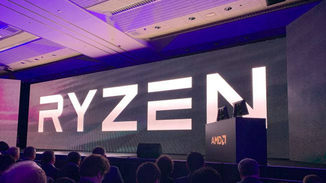
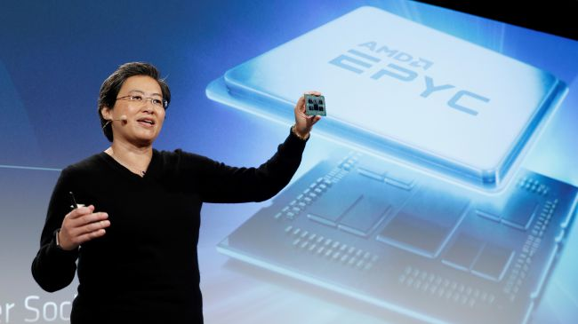

Tech News
Over the last couple years, AMD has been coming out with some of the best processors (CPUs) on the market, and it doesn’t look like it plans to slow down any time soon. Back at CES 2019, AMD announced its Zen 2 architecture, trimming the manufacturing process down to 7 nanometers (nm), and promising greater performance and efficiency. Then, at Computex 2019, AMD pulled the veil off of its Ryzen 3rd Generation processors. These chips took advantage of the smaller manufacturing process, bringing a 12-core, 24-thread processor to the mainstream at less than half the cost of Intel’s 12-core HEDT chip.
And, if that wasn’t enough, Microsoft took the stage at its E3 2019 keynote, saying that the system-on-a-chip powering the next Xbox, Project Scarlett, is using Zen 2 cores and AMD Navi graphics. Zen 2 is on a roll, and we haven’t even seen what AMD Ryzen Threadripper 3rd Generation can do yet. There is so much more to Zen 2, so we decided it was time to dive in and explore everything that this 7nm CPU architecture can do. And, be sure to keep this page bookmarked: there are surely many more Zen 2 processors on the way, and we’ll keep the article updated with all the latest information.
Right off the bat, we already know that AMD Ryzen 3rd Generation processors will be hitting store shelves on July 7. These chips are going to be the first consumer-ready processors based on the 7nm Zen 2 architecture, and will also be the most affordable. We also know that AMD Ryzen Threadripper 3rd Generation will be based on Zen 2, but the release date for that is a bit more fuzzy. Threadripper processors typically launch a few months after the mainstream Ryzen chips, so we could see it by November if we’re lucky. However, word on the street is that Threadripper 3rd Generation may be delayed until 2020, so we might be waiting a while. The final Zen 2 product will probably be the next-generation consoles. We know that Zen 2 is going to be inside both the PS5 and the next Xbox, but we only have a vague release window for the latter: "Holiday 2020." We’ll probably see both the next gen consoles release around November 2020.
Right now, the only Zen 2 parts we have pricing for are the AMD Ryzen 3rd Generation parts. The good news, however, is that these largely fall in line with the reasonable prices of Ryzen 2nd Generation. Prices are listed below:
It will be interesting to see, however, if the massive boost to technology will see the next generation consoles get a price bump. With all the lofty technology Microsoft and Sony are promising, we wouldn’t be surprised if these consoles are more expensive than previous generations.
With the move to 7nm, the biggest improvements are going to be to power efficiency. AMD Ryzen 3rd Generation processors will see power requirements rapidly decrease, which should result in lower temperatures, better overclocking and, of course, lower power bills. For instance, the AMD Ryzen 7 3700X will have just a 65W TDP, which is extremely low for an 8-core, 16-thread processor.
As for core counts, the chiplets containing the physical cores have shrunk for Zen 2, meaning each processor can fit more cores. This hasn’t been reflected in most of the lineup, as the Ryzen 7 processors still have 8-cores. However, we are getting the Ryzen 9 3900X, a 12-core, 24-thread processor, thanks to this die shrink.
Before Ryzen 3rd Generation’s announcement, we did see rumors that a 16-core processor would hit the mainstream, but that hasn’t happened yet. However, we have seen rumors of a 16-core Ryzen 9 3950X. We’d take that with a grain of salt, however.
Beyond core counts, Zen 2 allows for better performance overall. Not only do clock speeds see an improvement – up to 4.6GHz on the Ryzen 9 3900X out of the box – but also a massive boost to IPC (instructions per clock) performance. AMD engineers have supposedly squeezed an extra 15% IPC out of Zen 2 cores. We haven’t had a chance to test that claim yet, but if it’s true, Ryzen processors may end up being the best processors for gaming, and the inclusion in the next-generation consoles would make so much sense.
What will be particularly interesting, though, is how this will all translate to AMD Ryzen Threadripper 3 processors. These HEDT processors already boast up to 32-cores and 64-threads, so an increase in core counts, along with more power efficiency will be an amazing boost to performance for creatives and professionals.
That’s all we know about Zen 2 at this point, but be sure to come back, as we’ll update this article as soon as we get our hands on Ryzen 3 processors for review.
The information was got from HERE